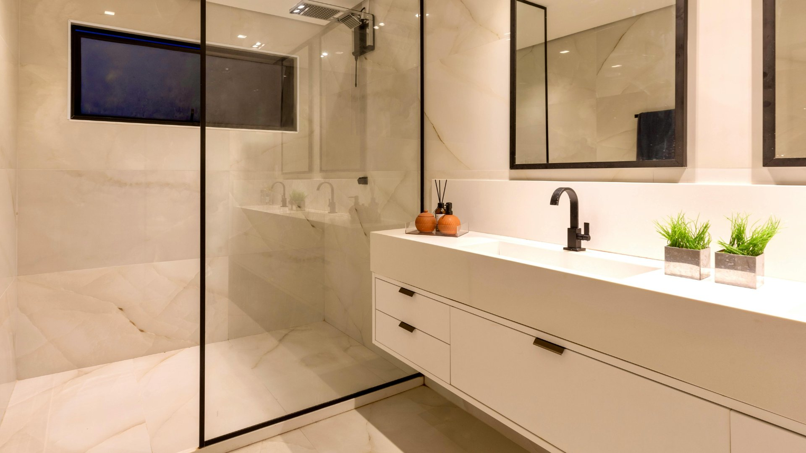

City Plumbing Services covers all of Chorlton — from the Victorian terraces of Beech Road to the 1930s semis of Manchester Road. Gas Safe registered engineers covering M21 and surrounding postcodes, seven days a week.
Chorlton attracts young families and professionals who invest in their homes — and with a housing stock that's predominantly Victorian terraces and 1930s semis, there's plenty to invest in. The M21 postcode has seen a lot of renovation activity over the past decade, with bathroom upgrades, kitchen extensions, and boiler replacements among the most common jobs. It's an area we know well and work in regularly.
The Victorian terraces that fill the streets around Beech Road, Nicolas Road, and Wilbraham Road were built in the 1880s and 1890s. Most have been updated internally over the decades but often retain original pipework in parts of the house. The 1930s semis on the outer edges of Chorlton — particularly around Manchester Road and Hardy Lane — have their own characteristic heating setups, typically gravity-fed systems with copper cylinders that are now at or past the end of their working life. We deal with both property types every week.

All our services are available to Chorlton residents and landlords across the M21 postcode.
Burst pipes, leaks, no heating or hot water — 24/7 across Chorlton. Victorian terraces in particular can have unexpected failures in older pipework — we respond fast to minimise damage and disruption.
Annual services, breakdown repairs, and new boiler installations across Chorlton. Many M21 homes are running 1930s-era gravity systems that are long overdue for replacement — we'll assess and advise honestly.
Full bathroom renovations for Chorlton's terrace and semi-detached properties. We project manage the whole job — from design and supply to plumbing and tiling — and understand the layout challenges of Victorian terrace bathrooms.
New systems, radiator upgrades, power flushing, and smart thermostats. Very common job in Chorlton is upgrading from an old gravity-fed system to a modern pressurised combi — a significant improvement in comfort and efficiency.
Dripping taps, leaking pipes, running toilets, low water pressure — no job too small across Chorlton. Same-day availability on most general plumbing repairs across M21.
Chorlton has a strong rental market, with many professional tenants. We carry out gas safety inspections and issue CP12 certificates the same day across M21, working with both individual landlords and letting agencies.
Chorlton's housing is predominantly two types: Victorian terraces from the 1880s–1900s, and inter-war semis from the 1920s–1940s. Understanding which you're dealing with matters when it comes to plumbing, because the two types have very different pipe layouts, water system designs, and typical failure points.
Victorian terraces in Chorlton — the kind you find on Nicolas Road, Albany Road, and the streets between Barlow Moor Road and Wilbraham Road — were built with lead supply pipework and iron drain stacks. The hot water systems were typically back boilers (long since removed and replaced) feeding gravity-fed cylinder systems. Today these properties have been updated in various ways: some have modern combi boilers, some have retained their cylinder but updated the boiler, and some are on their third or fourth boiler with pipework that's a mixture of everything. We see all of these configurations and carry out a proper assessment before recommending anything.
The 1930s semis that extend along Manchester Road, Hardy Lane, and into Chorlton Park are slightly different. These were built with slightly more modern plumbing in mind — copper pipework in more cases, slightly more standardised system layouts — but the heating systems are now quite old and often inefficient. We carry out a lot of full system replacements in these properties, upgrading from old gravity-fed systems to modern sealed combi or system boiler setups with smart controls.
Bathroom renovations are one of our most common jobs in Chorlton. The typical layout challenge in Victorian terraces is that the bathroom is often very small — frequently a converted bedroom or back addition — with access to pipework that's tight and awkward. We've done hundreds of these and know exactly how to make a compact Chorlton terrace bathroom work properly while still looking good.
City Plumbing Services is Gas Safe registered (reg: 000000), carries £5 million public liability insurance, and has been working across Chorlton and Greater Manchester since 2009. Call us on 0161 000 0000 for a free quote.
"Had a new combi boiler installed to replace the old gravity system in our Chorlton terrace. City Plumbing did a thorough survey first, explained exactly why a combi was the right choice for our setup, and the installation was done in a single day. The difference in water pressure and heating response is night and day. Really glad we made the switch."
Liam C. — Nicolas Road, Chorlton, M21
"City Plumbing fitted a new bathroom in our Victorian terrace on Albany Road. The bathroom is tiny but they designed a layout that uses every inch really well. The whole project took four days, they kept the disruption minimal, and the finish is really impressive. Price was competitive and stuck to the quote. Five stars easily."
Gemma T. — Albany Road, Chorlton, M21
"Emergency call when we had a bad leak in the kitchen on a Sunday. City Plumbing answered straight away, had an engineer at our door within ninety minutes, and the leak was sorted before the afternoon was out. Brilliant emergency service — clear pricing, no fuss, and the engineer was really friendly. Would definitely recommend."
Ben H. — Hardy Lane, Chorlton, M21